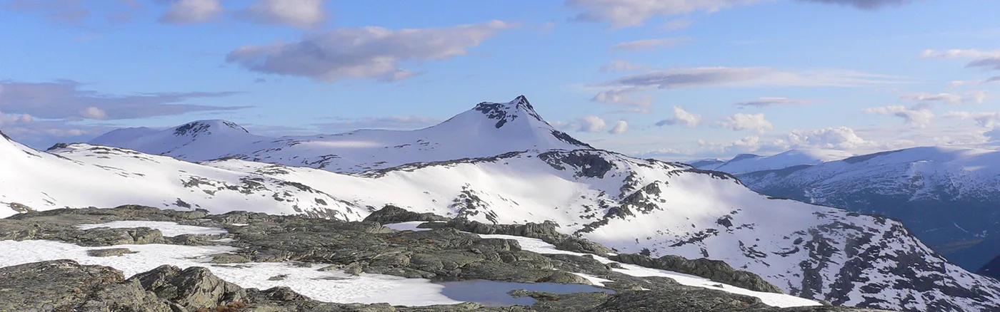

Anlegget
650 kvm, bygget for drift.
Greenfield colocation etablert i 2015 — med kraft, kjøling, sikkerhet og sertifiseringer som en del av leveransen.

Sertifiseringer
Anlegget er sertifisert etter ISO 9001 og ISO 27001, med akkreditering fra Norsk Akkreditering. Det betyr at kvalitets- og sikkerhetsarbeidet er dokumentert og revidert — ikke bare lovet.
- 01ISO 9001Kvalitetsstyring.
- 02ISO 27001Informasjonssikkerhet.
- 03Norsk AkkrediteringAkkreditert sertifisering.
- 04IotNet CertifiedNettsertifisering.
- Areal
- 650 kvm
- Type
- Greenfield colocation
- Etablert
- 2015
- Sted
- Luster kommune
- Sertifisert
- ISO 9001 · ISO 27001
Lokasjon: Luster kommune
Anlegget ligger i et av de mest naturskjønne områdene av Norge, i nærheten av isbreer og fjell. Det gir kaldt klima og kort vei til naturen — og en hverdag som ikke ligner andre datasenter.
For kunden betyr det et stabilt sted for utstyr, og et anlegg som er bygget der det er plass og kraft.
